skip to main content
home
materials
expanded
collapsed
archival texts
artifacts
book-length works
concepts
expanded
collapsed
analytical priorities
project design
collaboration
coding guidelines
misc
expanded
collapsed
contributors
bibliography
github repo
contact
One More Voice
×
One More Voice
home
texts
concepts
analytical priorities
project design
collaboration
coding guidelines
misc
contributors
bibliography
github repo
contact
(mailto)
site map
One More Voice
Lost Voices from the British Empire's Archives
Curated Artifacts
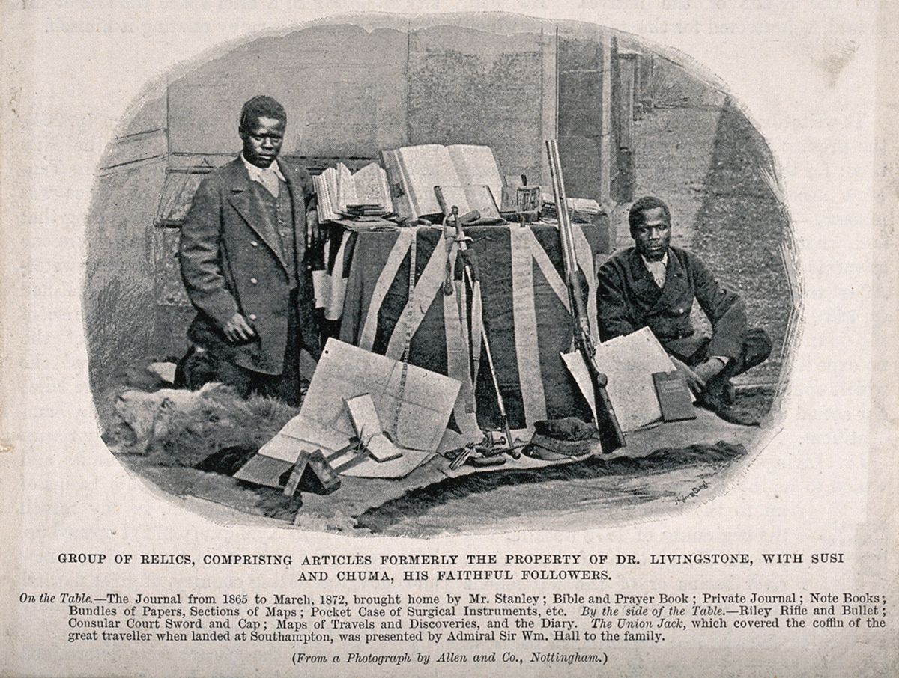
“Group of Relics, Comprising Articles Formerly the Property of Dr. Livingstone [...]” ([c.1874])
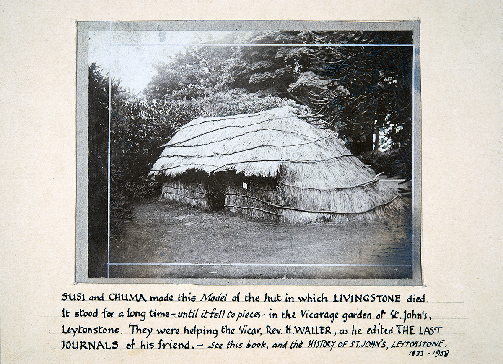
Susi and Chuma's Model of the Hut in which David Livingstone Died ([late nineteenth or twentieth century])
Abdullah Susi (Mislabeled Jacob Wainwright) (c.1874)
Apolo Kagwa, Katikiro of Uganda, and His Son ([early twentieth century])
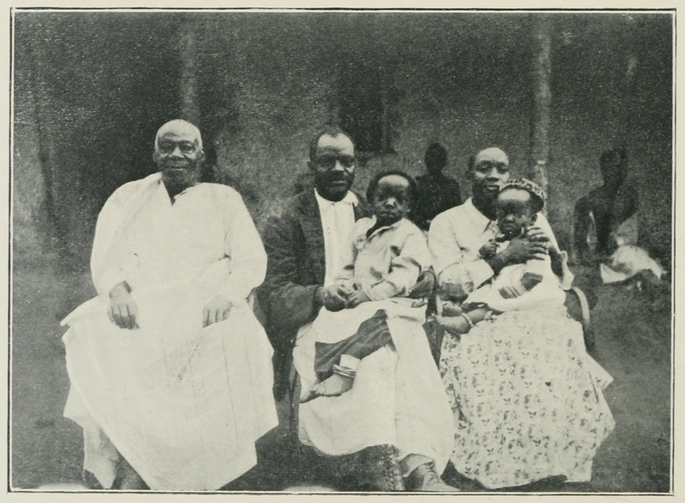
Ham Mukasa, with Father, Wife, and Children ([early twentieth century])
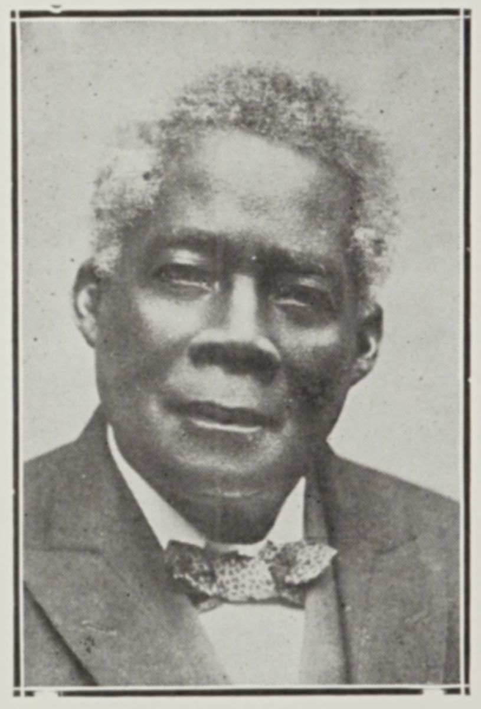
Edward Wilmot Blyden ([late nineteenth or early twentieth century])
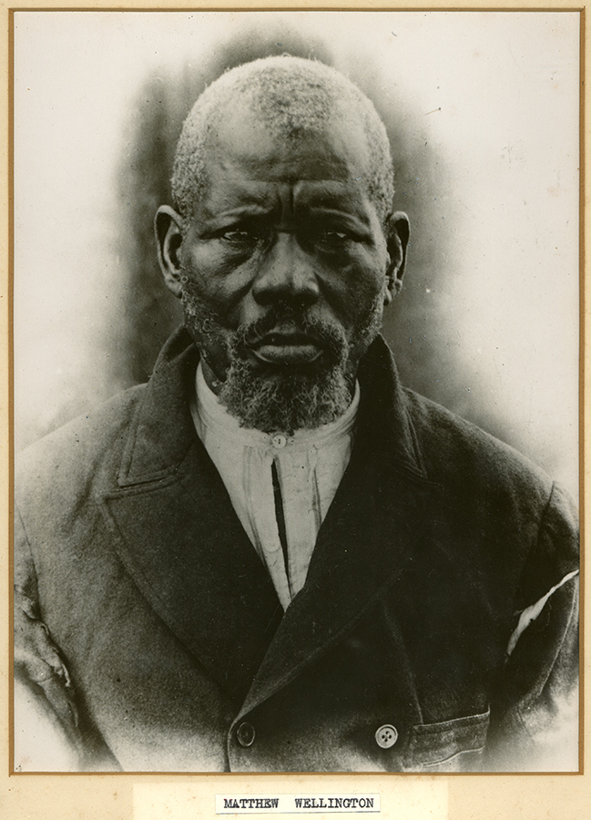
Matthew Wellington ([1874 or later])
Matthew Wellington ([1874 or later])
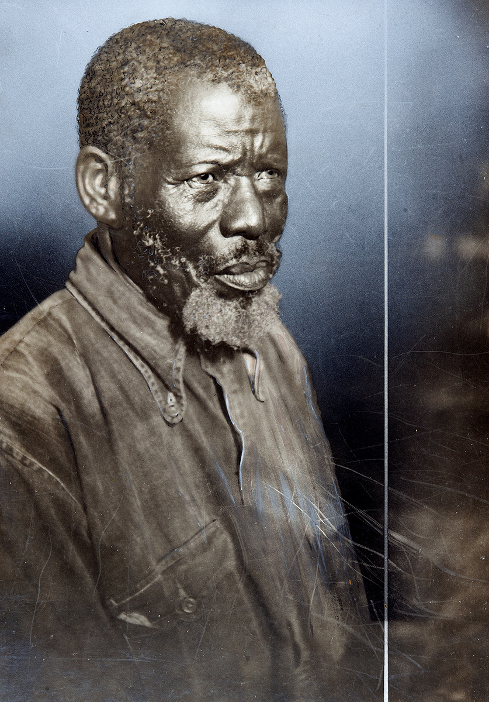
Matthew Wellington ([1874 or later])
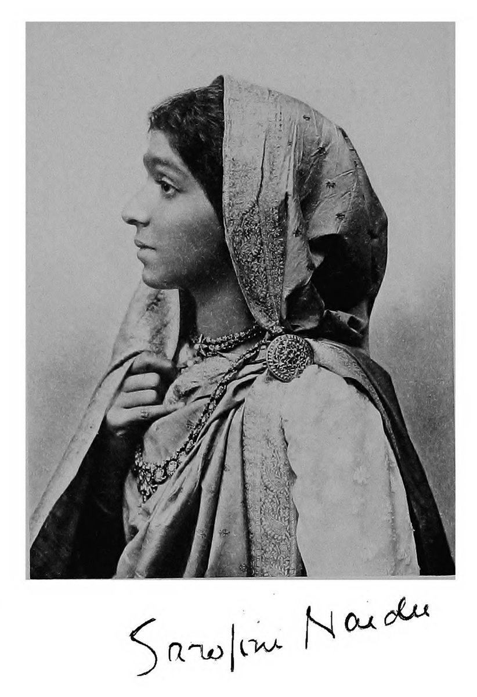
Sarojini Naidu (with Facsimile Signature) ([early twentieth century])
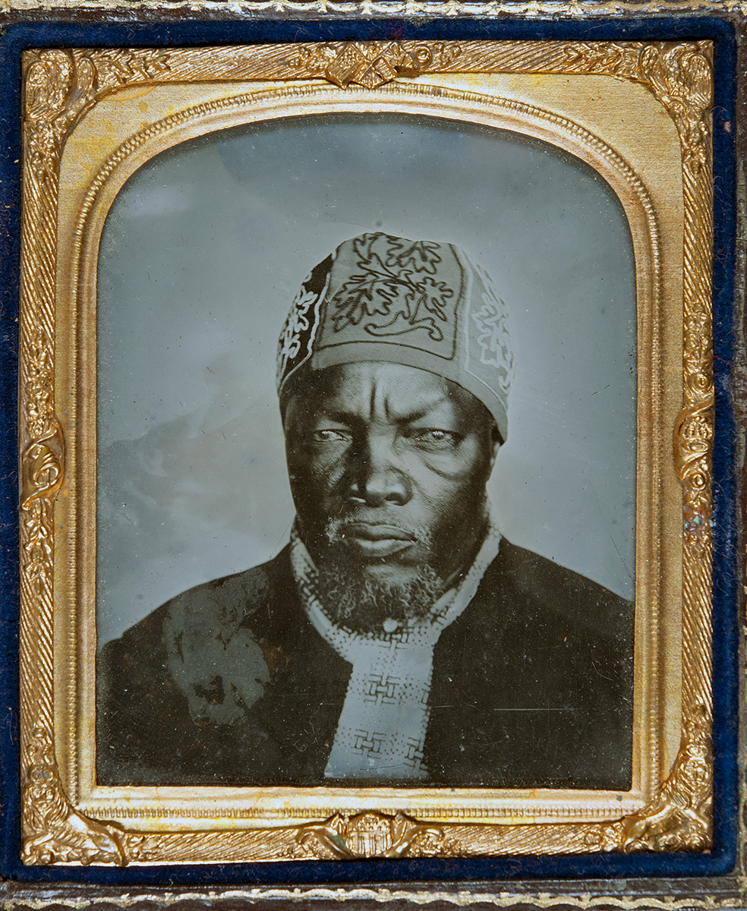
Sechele ([second half of nineteenth century])
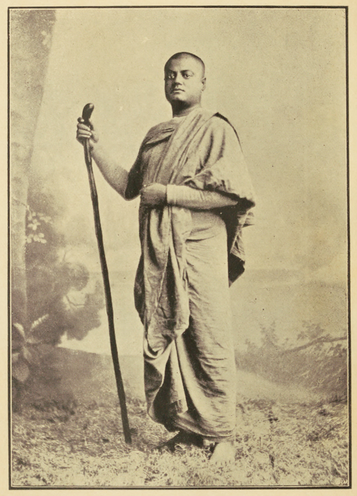
Swami Vivekanada ([c.1893])
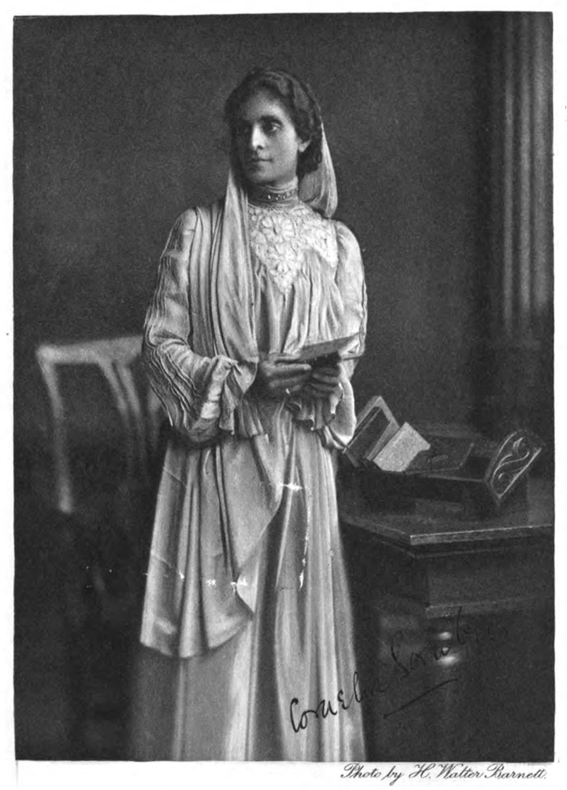
Cornelia Sorabji (with Superimposed Facsimile Signature) ([late nineteenth or early twentieth century])
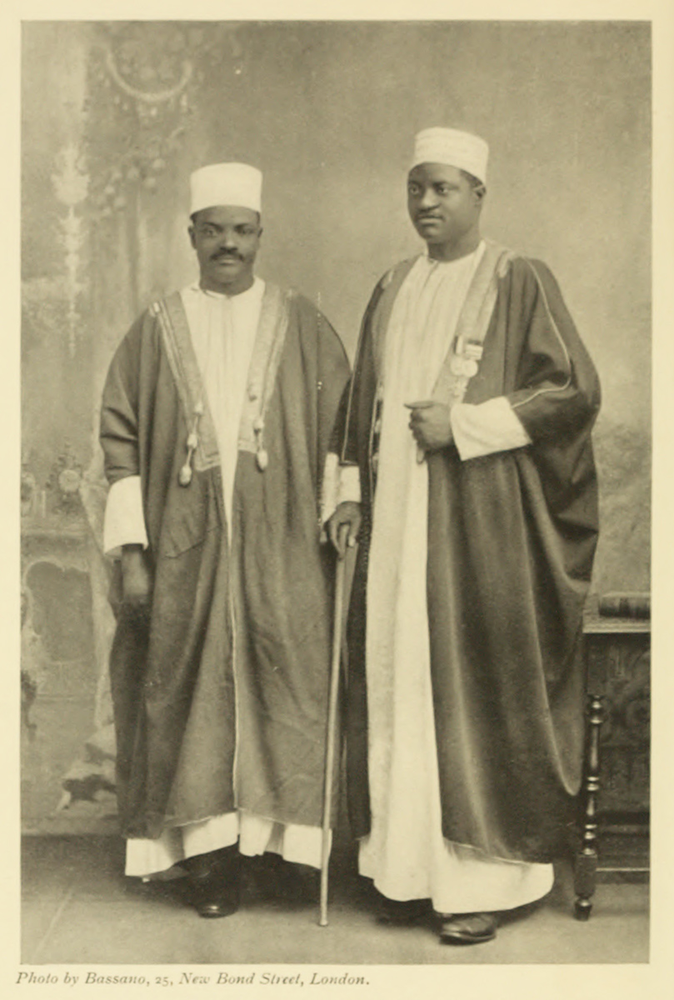
Ham Mukasa and Apolo Kagwa ([early twentieth century])
Extract from David Livingstone's Field Diary III with Addition by Bon Ale/Bin Aleī/Bon Ārie (19-20 May 1866)
Jacob Wainwright ([c.1874])
Jacob Wainwright with David Livingstone’s Coffin (1874)
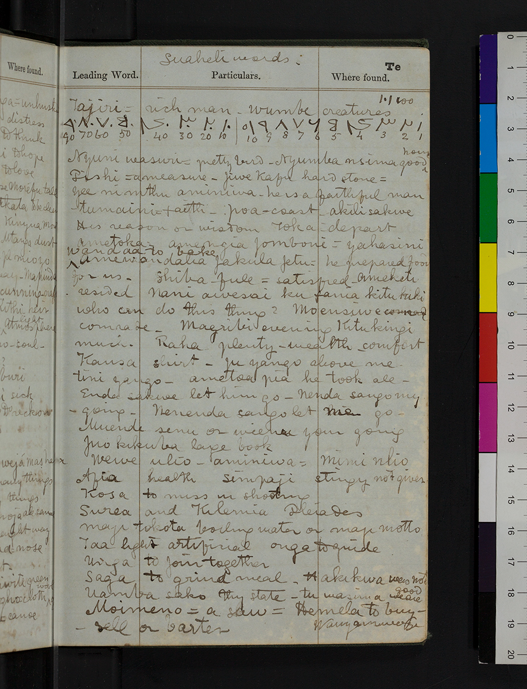
Excerpt from David Livingstone’s Notebook with Swahili Vocabulary List and Arabic Numbers ([c.March 1866 to March 1870])
Page Inscribed by Solomon T. Plaatje to Kelly Miller (16 November 1921)
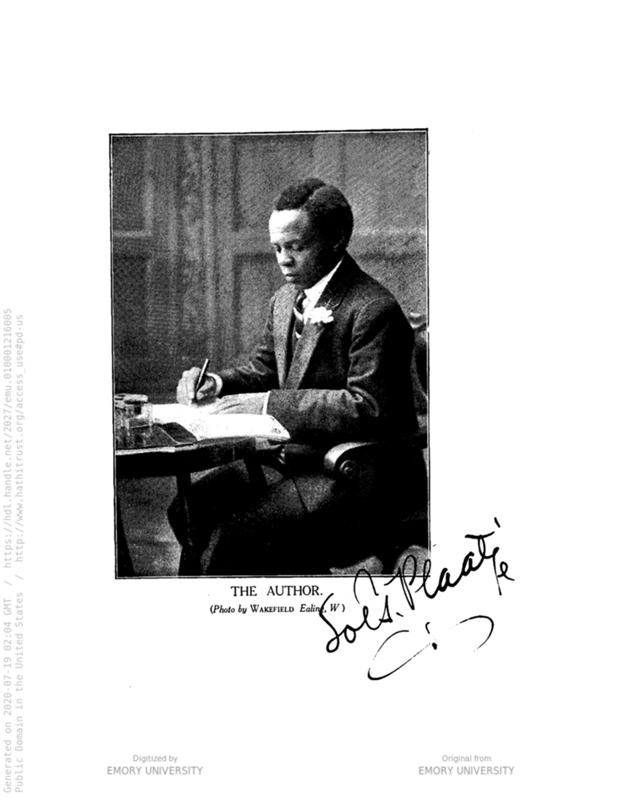
Solomon T. Plaatje, Signed ([early twentieth century])
Elizabeth Lilith M’belle (“Mrs. S.T. Plaatje”) ([early twentieth century])
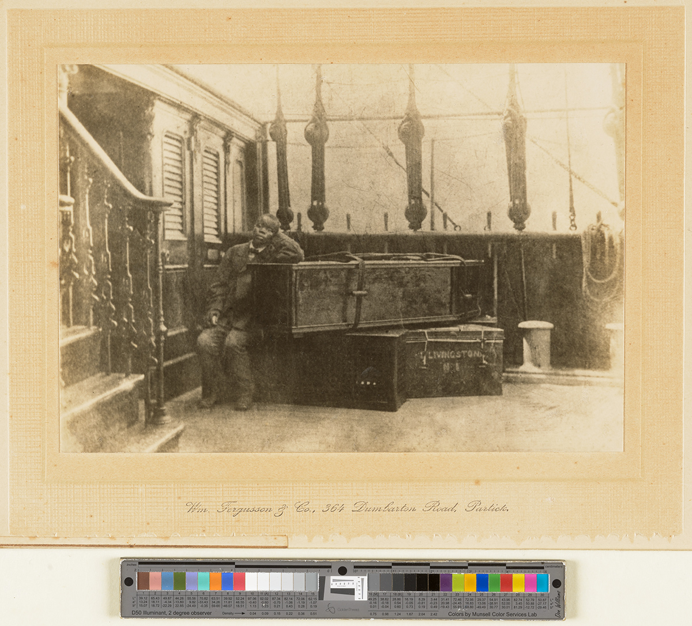
Jacob Wainwright with David Livingstone’s Coffin and Some of Livingstone’s Travelling Trunks on Board the Ship ‘Malwa.’ (1874)


![Tree segment with outer bark removed and a faded inscription on inner bark that begins “Dr. Livignston[e] / May 4, 18[73].”](images/liv_000022_0002-0003-combine.jpg "Detail from Weatherly Poulett and [Jacob Wainwright], “Dr. Livingstone, May 4 1873; Inscription Carved by African Youths on the Tree in Central Africa at the Foot of Which Livingstone’s Heart Was Buried” (Photograph, c. 1895-1896), no. 561464i, Wellcome Library, London. Copyright Wellcome Library, London. Creative Commons Attribution 4.0 International (https://creativecommons.org/licenses/by/4.0/).")